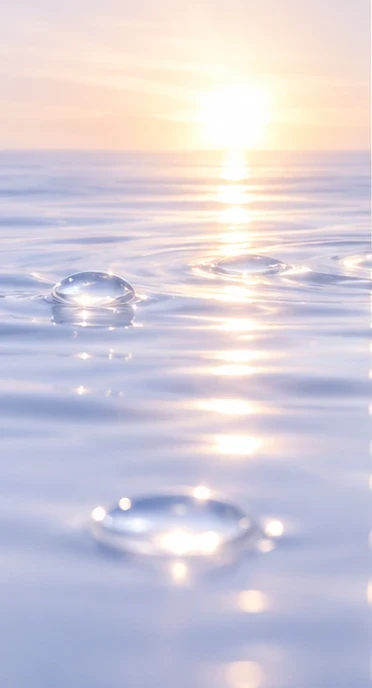

01
Less, but certain.
적게, 그러나 확실하게
꼭 필요한 것만 담아
하나하나 제대로 완성합니다.
새가 날개를 펴고 솟아오르는 순간, 꽃이 만개하는 순간.
멈춰 있던 것이 다시 움직이기 시작하는 전환점.
우리가 이야기하는 것은 ‘완벽한 피부’가 아닙니다. 지치고 무너진 피부가 스스로 다시 떠오르는 힘, 회복탄력성입니다.
그 순간을 프랑스어로 l’essor라 부릅니다. 그리고 우리는 그 이름을 그대로 가져와 르소르가 되었습니다.

르소르는 시장조사에서 시작된 브랜드가 아닙니다. 한 사람의 결핍에서 시작되었습니다.
쉽게 예민해지고, 쉽게 무너지는 피부. 좋다는 제품은 대부분 너무 강해서 오히려 부담이 되었습니다. 순하기만 하거나, 강하기만 하거나. 안심하고 쓸 수 있으면서 피부의 바탕까지 가꿔 주는 제품은 찾기 어려웠습니다.
그래서, 직접 만들었습니다.
이 출발점이 르소르의 모든 결정 기준입니다. 어떤 성분을 넣을지, 테스트를 어디까지 할지, 어떤 말로 소개할지. 판단은 언제나 하나의 질문으로 돌아옵니다.
“내가 안심하고 쓸 수 있는가.”
모든 사람이 피부가 좋아야 하는 건 아닙니다.
하지만 좋아지고 싶은 사람에게는,
확실하게 믿을 기초 하나는 있어야 합니다.LESOR는 그 하나를 제대로 만듭니다.
꼭 필요한 것만 담아
하나하나 제대로 완성합니다.
예민한 날에도 안심하고 손이 가는가.
그것이 우리의 기준입니다.
가리는 대신
피부 본연의 바탕을 가꿉니다.
기준선을 세우고, 그 위에서 다시 도약한다. 로고는 르소르의 이야기를 그대로 담고 있습니다.
좋아지고 싶은 당신에게, 확실한 하나.